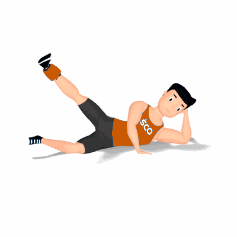

Abdução Deitado com Caneleira

Exercício para fortalecimento e hipertrofia dos músculos da coxa e glúteos, com enfoque a região lateral de coxa. Trabalha os músculos vasto laterais e glúteos máximos.
Ficha Técnica
Tipo: Musculação
Grupo Muscular: Glúteo
Aparelho: Nenhum
Músculos: Nenhum
Como realizar
- Deite sobre um colchonete;
- Coloque uma caneleira em uma das pernas na região próxima aos tornozelos;
- Para maior estabilidade durante a execução, posicione o cotovelo flexionado e apoie a mão sobre a cabeça;
- Manter a perna com uma ligeira flexão dos joelhos, eleve-a de forma lateral ao corpo o mais alto que conseguir;
- Durante o movimento, realize a contração máximo dos músculos trabalhados;
- Retorne de forma controlada à posição inicial e repita os movimentos.
 RC STORE
RC STORE